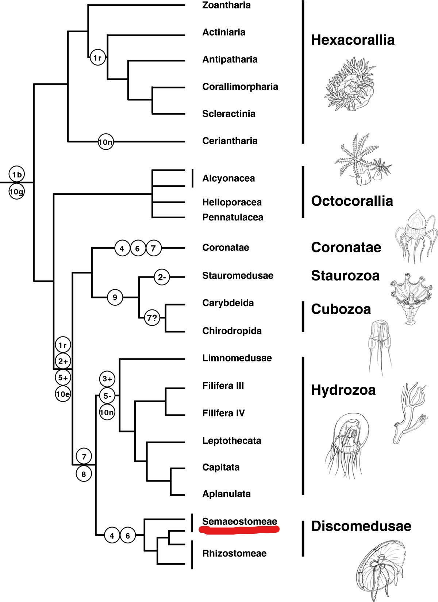
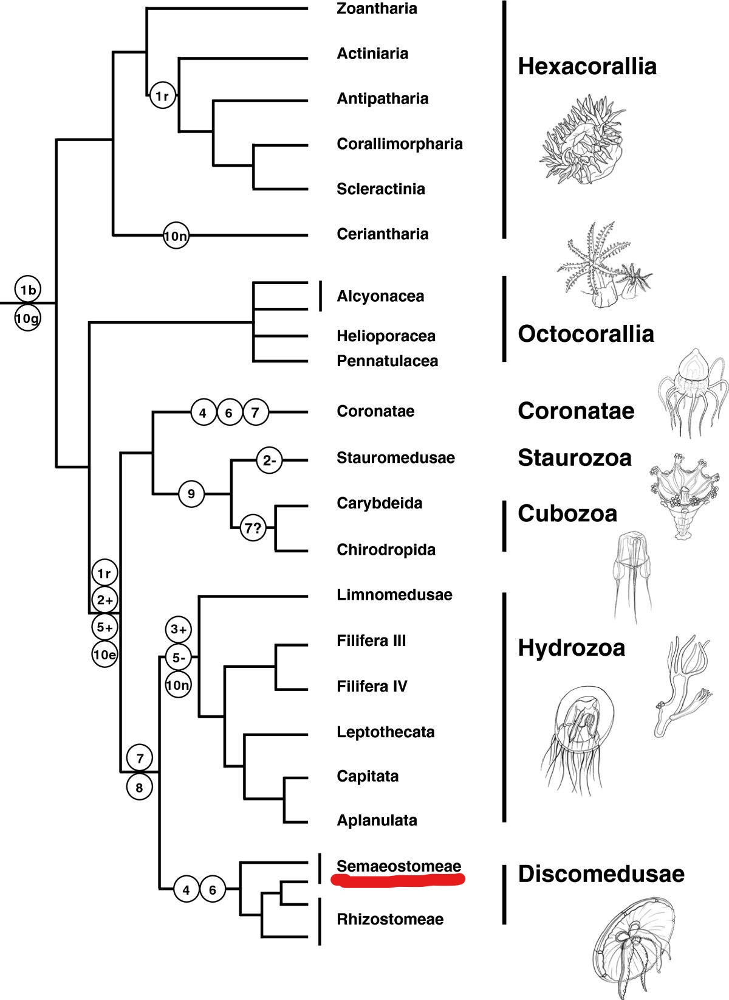

Ancestors
The jellyfish is considered one of the oldest forms of animal life. It's oldest ancestors is believed to have lived 500-700 million years ago making them 3 times as old as the first dinosaurs. Of all types of animals only sponges are considered to have been earlier in their development. Some of the closest ancestors to the Lion's mane jellyfish of the Semaeostomeae order are other types of jellyfish found in the Hydrozoa class. Other common ancestors of all jellyfish are different types of corals and anemones who are all part of the Cnidaria phylum, one feature that all of it's common ancestors of the cnidaria phylum have in common is a specialized cell that is specifically designed for stinging to help it capture its prey.
 

Adaptations
The Lion's Mane Jellyfish has 8 lobes that are obvious to the naked eye. Some of these lobes have things that are used for sensing things and balance, the ends of certain lobes even have light receptors.
The smaller Lion's mane jellyfish range from a milky white color to a mustard yellow. The larger ones vary in color from a deep brick red to a dark purple. The change in coloration is mainly due to the depth at which the jellyfish lives. It is believed that these certain colors help the jellyfish capture various prey.
The enormous tentacles of the Lion's mane jellyfish are lined with a massive amount of cnidocytes that will be triggered whenever touched. These cnidocytes help the jellyfish deliver a sting to any prey or predators that it has to defend itself against.